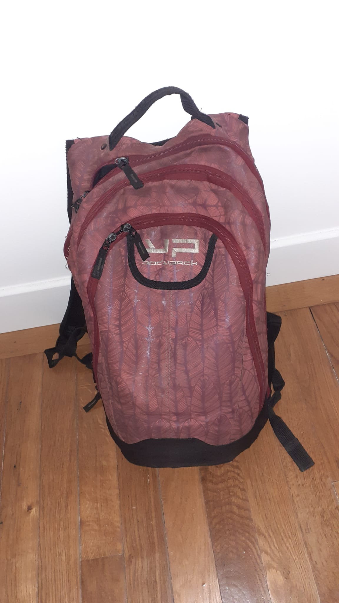
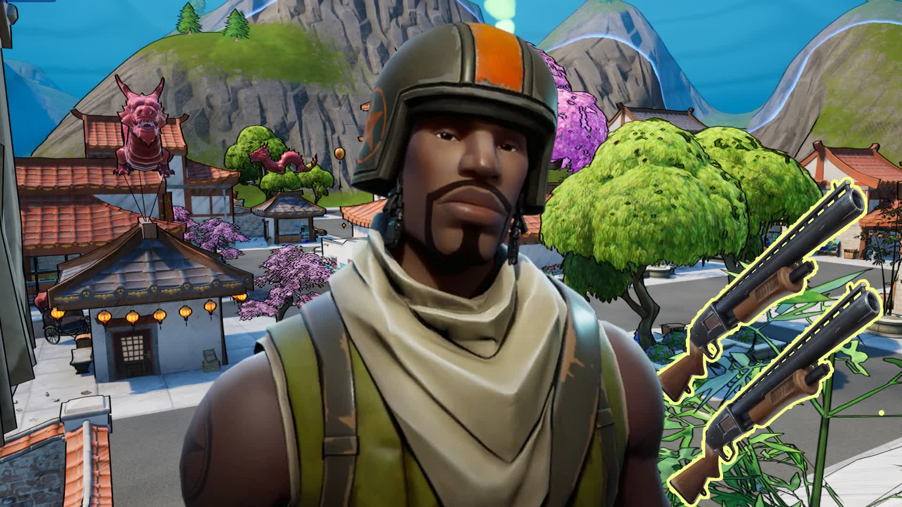

comment avoir le plus beau skin du jeu "pierre" et obtenir le niveau maximum de compétences en mathématiques dans le jeu de la vie?
bravo! si vous avez trouvé cette page secrète, vous faites partie de l'elite!!
1.le choix de la faction
Pour pouvoir obtenir le skin et le niveau maximal en mathématiques, le choix de la faction ainsi que la concèption de l'avtar son les choses les plus iportantes!
En effet, vous allez devoir choisir la faction chinois (celle-ci bénéficie d'un buff dans les compétences artisanales et mathématiques mais possède aussi un debuff sur la visée). Nous n'utiliserons donc pas des armes de visés.
une fois la faction choisie, il faudra que vous customisiez votre personage selon ces critères:
- laissez les paramètres du visage par défault de la faction
- mettez la coupe de cheveux "coupe au bol" avec la couleur "noir"
- définissez l'age du perso à "adolescent"
- définissez sa taille sur "1m74"
voici à quoi devrait ressembler la tête:
maintenant que vous avez fini la personalisation de votre personnage, passons à l'etape 2
2.Le spawn
le choix du spawn est nécessaire afin que vous puissiez obtenir tous les items nécessaire au skin de votre personnage.
Il faudra donc que vous choisissiez le biôme "lucky landing"

une fois arrivé à lucky landing, dirigez vous dans la petite cabane avec un dragon au dessus pour obtenir le premier accéssoire, le sac a dos rouge.

une fois le sac à dos en poche, dirigez vous voir cet homme qui vous donneras la veste
maintenant, il ne vous manque plus qu'une arme pour pouvoir farmer de l'exp. Pour ce faire, dirigez vous au cnetre de la map pour recuperer le baton shaolin au pied du sakura.

vous êtes maintenant prêt pour la partie la plus longue: le farm de l'exp pour augmenter la maitrise en maths
3.le farm
Pour pouvoir obtenir facilement de l'exp, il va falloir aller dans une vile à haute densitée de bambi. Pour se faire, dirigez vous a tilted tower et tuez tous les noobs que vous croiserez en chemin. Ainsi, vous gagnerez rapidemnt de l'exp et sans beaucoup de mal.

4.les points de compétences
après 3 heures passées à farmer, vous êtes enfin prêt à passer niveau max en maths. Pour se faire, rendez vous dans l'arbre de compétence qui se situe dans vos paramètres et mettez tout dans la branche du bas

Merci d'avoir suivi ce tuto! Vous devriez normalement obtenir le trophé "chinois exemplaire". à bientot pour de nouveaux tutos!